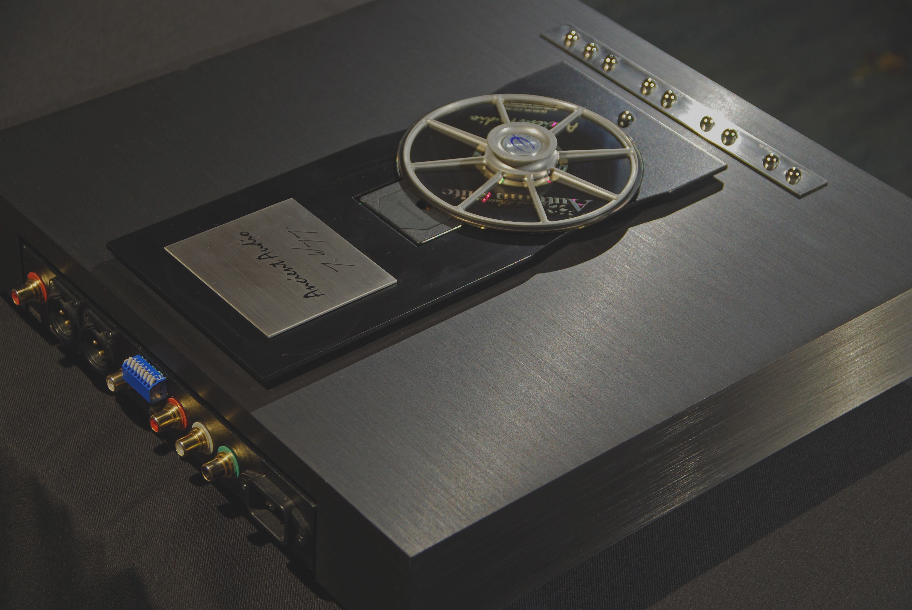

Lektor Air
Highly advanced digital signal transmission technology in line with a thorough knowledge of tube and analogue layout designing resulted in extraordinary sound reproduction and has been enjoying the renown ever since. It was the Lektor Grand project that made it possible for Lektor Grand to become a leading manufacturer of digital sound reproducers.
In the meantime Lektor Grand went through a complete internal upgrade that lead up to its SE version, once again, setting an ultimate level of excellence and a benchmark for other ambitious projects irrespective of price. Following the success of Lector Grand and its breakthrough concepts a new integrated versions hit the market a few years after Lektor Grand premiere. It turned out to be most frequently bought Ancient Audio CD player due to its outstanding sound reproduction, analogue inputs and reasonable price tag.
The Lektor Air on show, was designed to be a more advanced version of Lektor Prime at first, however, it developed far beyond the tentative project assumptions. Despite its similar looks to Lektor Prime it is a different construction having much more in common with Lektor Grand design, the most important of which is an extremely accurate and precise low jitter (3ps) master clock manufactured by Tent Labs :
A new facility applied to The Air Lektor is an expansion slot for digital input modules. It will make it possible in future to apply digital input (such as S/P DIF, AES/EBU, USB) and utilize The Lektor Air as state of the art outboard DAC for music servers, computers, etc.
The sound signature is a natural development of the Ancient Audio sound with its lively and natural aspects devoid of digital glare with lots of "air" and 3-D presentation (depth, height, width) and live music acoustics. All these quality of presentation account for the name of this CD model - THE AIR.
Tangibility of musical events and its focusing makes a music presentation a breathtaking event. All this being coupled with unprecedented dynamic contrasts and spectacular "imaging" of silence which from being underestimated aspect in music is brought forward as an equal part of any musical presentation.